<<2016年3月 | トップページ | 2016年5月>>
2016年4月
去年より成長したこと！［久保みのり］
みなさん。こんにちは (^o^)/
みのりです！！
わたしの小学校では、低学年と高学年で階がわかれます。
わたしも４年生になったから、高学年のなかま入り～。
お姉さんになれてうれしいな～。
そうそう！
お姉さん気分といえば、
こないだてれび戦士のねねちゃんと、おしゃれなカフェでワッフルを食べました♪
ウフフ。
おいしかったなぁ。
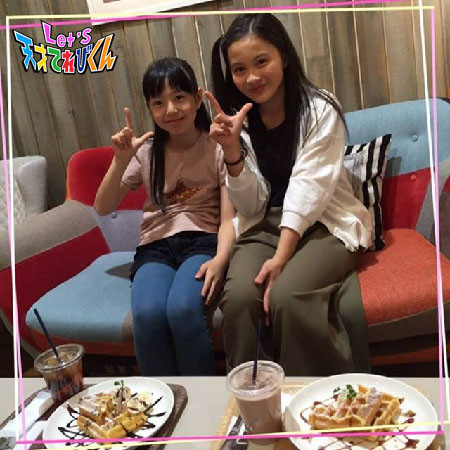
*.｡.:*・ﾟ *.｡.:*・ﾟ *.｡.:*・ﾟ *.｡.:*・ﾟ
さてさて。
今回のテーマ「 去年より成長したこと！ 」
それは・・・
足が速くなったこと、でーす！！
２年生の運動会のときょうそうでは２位だったけど
３年生では１位をとることができました ^ ^
じつは、パパと公園でスタートの練習をしたり、
朝早くおきて家の前でなわとびをして体力をつけました！
えへん。
今年は４年生になったので、
ずっと楽しみにしていたクラブ活動にさんかすることができます！
おもしろそうなクラブがたくさんあるからまよったけど、
わたしはりくじょうクラブに入って
もっともっと速く走れるようになりたいと思っています ^ ^
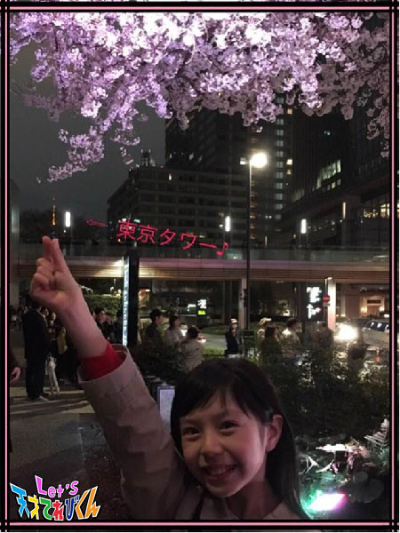
レッツ めざせ１とうしょう！！
投稿者:久保みのり | 投稿時間:18時45分 | カテゴリ：てれび戦士 | 固定リンク
去年より成長したこと！［飯島緋梨］
こんにちは *\(^o^)/*
飯島緋梨です。
緋梨は中学生になりました！！
中学校生活にはだんだんと慣れ
毎日がすっごく楽しいです！！
今は何の部活に入ろうか考え中です！
さてさて！
今回のお題は
「 去年より成長したこと！ 」
まずは、身長が伸びたことです。
『 Let's天才てれびくん』が始まったときは140センチだったのに、今は151センチです。
２年間で11センチも！(◎_◎;)
こんなに伸びるなんてビックリです。
牛乳が大好きで毎日飲んでるからかな？
緋梨が去年より成長したことは・・・
緋梨は自転車に乗ることが苦手でした。
低学年のときに、急な坂道で転んでケガしてから
自転車に乗ることが怖くて
あまり乗っていませんでした。
でも中学生からは自転車で学校に登校するので
チョット練習してみました。
久しぶりに自転車に乗ってみると
足がついて前よりもバランスがとれるようになりました (^^)
坂道はまだ怖いけど、
苦手なことでも挑戦してみる！
これが緋梨の成長したことかも？
みなさんの、去年より成長したことはなんですか？
Let's 苦手克服
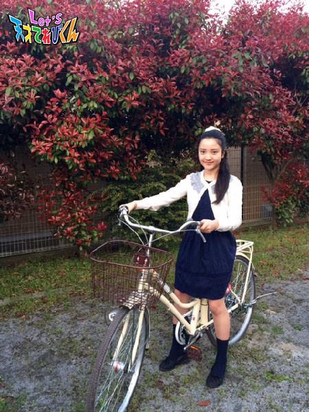
投稿者:飯島緋梨 | 投稿時間:18時54分 | カテゴリ：てれび戦士 | 固定リンク
去年より成長したこと！［胡内奏芽］
こんにちは！
今回はこうちが担当します。
テーマは「 去年より成長したこと！ 」ですね。
うーん。。
何だろう？？？？？
あ！！
プールです。
去年までは、水が大嫌いでした。
もぐるなんてできないし、
顔にかかっただけでも、もうダメでした。
そんなぼくがなんと！！
顔をつけて少しだけ泳げるようになったんです (^o^)
それだけで、自信もつきました。
今年は、さらに泳げるようになりたいです！！
海はまだ怖いから、それも入れるようになったら楽しそう！！
以上、去年より成長したことでした。
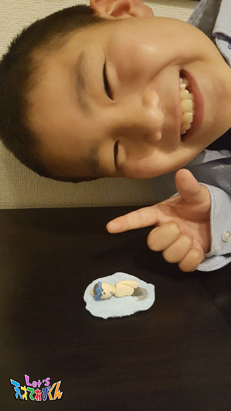
目指せ！！スイマー！
作ってみました。
投稿者:胡内奏芽 | 投稿時間:18時45分 | カテゴリ：てれび戦士 | 固定リンク
去年より成長したこと！［林武尊］
こんにちは、林武尊です！！
中学生になりました。
「 えっ！ 武尊が中学生！ 」と驚かれて、
「 そうだよ！中学生だよ！ 」と答えたり、
「 おめでとう 」と祝ってもらったりしました。
中学生活１日目！
待ちに待った入学式！！
初めは緊張したけれど、知り合いが多くて安心しました！
中学生活２日目！
中学生になって小学校と違うところがたくさんありました。
算数が数学になったり、部活があったり。
また、いろいろ報告しますね～
では、本題へ。
今回は「 去年より成長したこと！ 」です。
春休みに、１人で岡山の実家に新幹線に乗って帰りました。
初めての試みです！
最初はどこに座ったらいいのか分からなくて迷っていました。
そのあとも、座ったら座ったで緊張していて、全然眠れませんでした。
おばあちゃんのところに着いたら、もう夜になっていました。
東京へ帰るときは、座る席を間違っていて
大阪から品川まで、ずっと立って帰りました・・・
でも無事に家に着いたよ (⌒-⌒; )
１人で新幹線に乗って岡山まで行けた ＼(^o^)／
これがぼくの成長したところです。
それから、今年はてれび戦士の先輩になりました。
中身（ ？ ）も成長したし、背も伸びました。
写真の学生服も成長した証です (￣^￣)ゞ
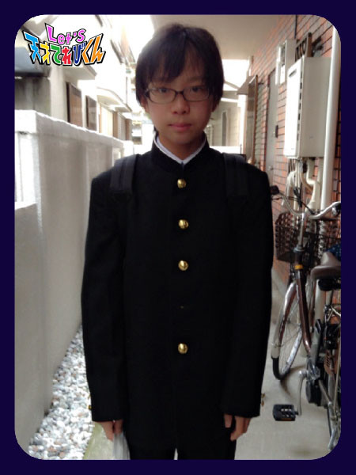
でも、ボタンが多すぎて１個抜かしちゃった f^_^;)
そんなことばっかです (;＞_＜;)
やっぱり中身はまだ成長してないな・・・・
それでもしっかり頑張るので、
これからもよろしくお願いします！！
投稿者:林武尊 | 投稿時間:18時45分 | カテゴリ：てれび戦士 | 固定リンク
去年より成長したこと！［黒川桃花］
食べるの大好き黒川桃花です！
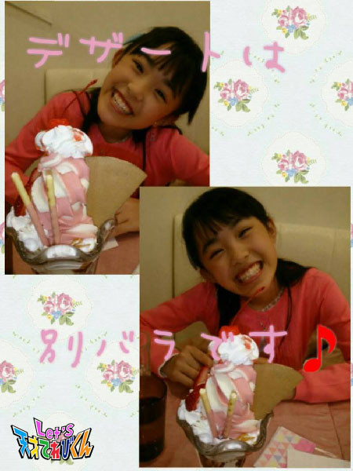
今回のお題は「 去年より成長したこと！ 」です。
成長したことはというと、
私はほとんど好き嫌いなく何でも食べられるのですが、
どうしても残してしまうものがありました。
それは、生の玉ねぎです！
それが最近、がんばれば食べられるようになりました (^_^)！
一度、うわーおいしくないなと思っても、
挑戦してみたら意外と大丈夫だったりしますよ～！
このことは、食べものに関してだけではなくて、
いろんなことに通じることなんだなぁと思います。
一度ダメでもまたチャレンジしてみる！
それがいちばん大事だと思いました。
皆さんも、いろいろなことにチャレンジしてみて下さいね！
投稿者:黒川桃花 | 投稿時間:18時45分 | カテゴリ：てれび戦士 | 固定リンク
去年より成長したこと！［原田明莉］
☆ Hello ☆
明莉です！
中学１年生になり学校生活にもなれてきましたし、
お友だちもたくさんできましたー！！
みんな元気いっぱいで
よく笑う子たちで
クラスの雰囲気はいい感じです！
この１年間楽しく過ごせそうな気がします！
これからが楽しみだぁぁあーー
ではでは本題に入ります！
今回のテーマは
「 去年より成長したこと！ 」
です！
私の成長といえば「 味覚 」です！
成長とは意味が少し違うかもしれないですが
去年よりガラッッッと変わったことです！
まぁもともと食べることが好きで、食いしん坊なんですが
一応、好き嫌いもありました！
野菜とか、特に緑の濃い色の野菜が苦手でした！！（ オクラは好き！ ）
で、ソフトクリームなど甘いものが好きでした！！
でも今年！！！
去年苦手だった濃い緑色の野菜が好きになったんです！！
ほうれん草は今、好きな食べものランキングトップ５くらいに入ります！
これも大人の味覚へ少し近づいているのかなー？
と思いましたー！
あ！それと！
交通ICカードを子供用から大人用に変えました！
勉強も自分でやっていかなくてはいけないし！
中学生って、本当に大人へ近づく時期なんですね！
もっといろいろ頑張らなくちゃっっ！
そのためには好き嫌いをせずに
たくさん食べる食べる食べるです！
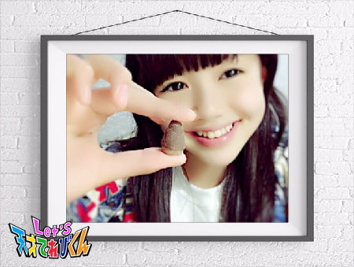
これはお菓子ですね・・・へへ笑笑
ということで
私の去年より成長したことは
味覚でした！！！
みなさんの、去年より成長したことはなんですかー？
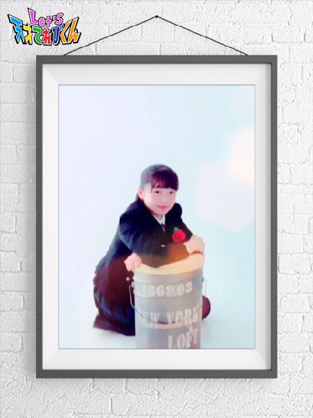
投稿者:原田明莉 | 投稿時間:18時45分 | カテゴリ：てれび戦士 | 固定リンク
去年より成長したこと！［柿澤仁誠］
こんにちは！！
柿澤仁誠です！
今回のテーマは、
「 去年より成長したこと！ 」
ぼくが去年よりいちばん成長したと思うことは、
ジャジャーン＼(^o^)／
料理が少しできるようになったことです！
去年までは料理の手伝いは少し苦手でした。
いためものを作っているときに、
ヤケドをしてしまったからです。
だけど、さいきんは火を使わない料理を手伝っています。
そしたら楽しくて、どんどん好きになりました。
さいきん作った夜ごはんはこちら (^o^)v
それは「 お寿司（すし）！！ 」です！
ぼくはお寿司が大好きなので、
お母さんにお寿司を作るじゅんびをしてもらいました。
お寿司はぼくでも作れるぐらい、かんたんなんですよ(^_^)v
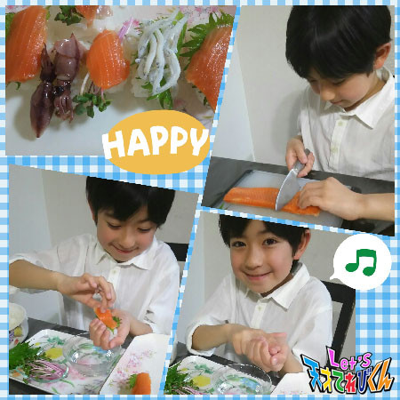
寿司ネタも自分で選びました。
自分で作ったお寿司は、サイコーーにおいしかったです！！
お寿司を食べ終わったときは、
もういちど作って食べてみたいな～と思いました！
では、また (^o^ゞ
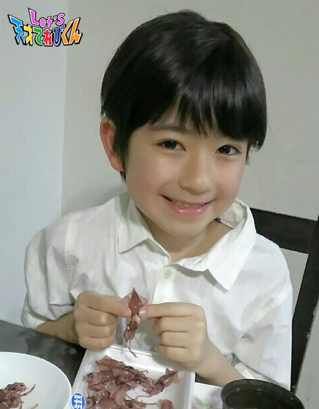
投稿者:柿澤仁誠 | 投稿時間:18時54分 | カテゴリ：てれび戦士 | 固定リンク
私の得意ワザ！［皆川寧々］
みなさ～ん！！！！
こんにちは＊
新てれび戦士の
寧々デスっ (๑•̀╰╯•́)و.｡.:*
ここでちょっと自己紹介！！
いまいちばん好きなこと。。。
去年から始めたミニバスケットボールをがんばっています！
ゴール下のシュートを決めたときの
快感はたまらないデスっ ヽ(｡>∀<)ﾉ☆
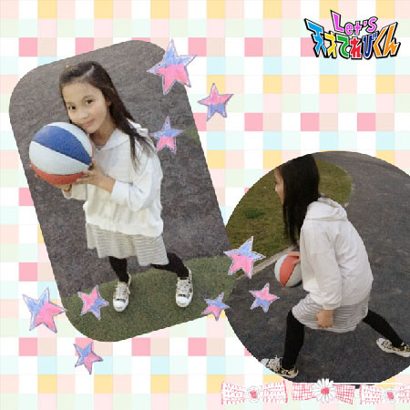
今回のテーマは「 私の得意ワザ！ 」
特技は。。。
大声を出すことと
たくさ～ん食べることデスっ！！
学校の運動会では２年連続で応援団に！
去年は白組の旗手になりました。
風にあおられ、いまにも倒れそうになる旗を持ち
運動場を走りまくりました！！
今年は団長か副団長になりたい！と思っています！
そして、おいしいものを食べてるときは、
しあわせでいつもニコニコしちゃいます！
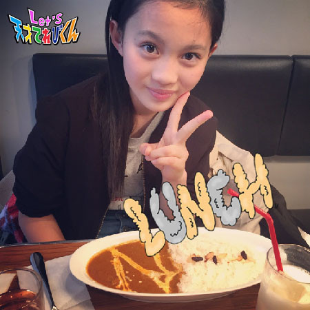
中でも、スイーツに目がないデスっ！
生クリームが大好きデスっ☆
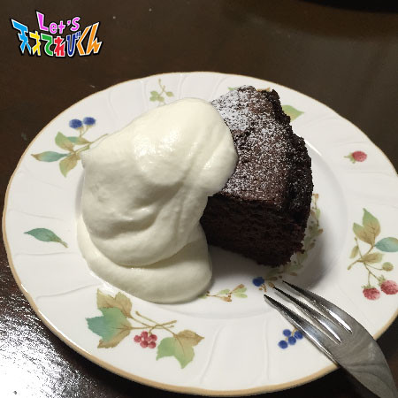
↑ ↑ ↑
これは、去年お母さんの誕生日に
祖母と作ったガトーショコラデスっ
寧々のことを知ってくると
みんなに決まって
「 だまってれば、かわいいのにねぇ 」
と、言われます笑
こんな、見た目と違って男気とおバカなオーラがただよう私ですが、
これからの活躍、応援してくださいっ！！
投稿者:皆川寧々 | 投稿時間:18時45分 | カテゴリ：てれび戦士 | 固定リンク
私の得意ワザ！［瀧澤翼］
こんにちはー！
改めまして中学２年生になりました！
瀧澤翼です！
さぁ、今回のテーマは「 私の得意ワザ！ 」ですね。
僕の得意なことと言えばダンスや英語、
最近習い始めた殺陣（ たて ）などがありますが、
今年度は得意なことを増やしたいなぁ～ m(_ _)m
そこで僕は「 みんなをまとめる 」ということを
得意なことの１つにしたいです。
実は学校の体育祭の応援団や学級委員長など、
「 みんなをまとめる 」という役割をしたことがないのです。
だから僕の中では未知の世界。
てれび戦士の中で僕が最年長なので、
みんなの気持ちを１つにして
超次元帝国に立ち向かっていきます！！
なので、僕はみんなをまとめる力が
得意ワザの１つになるように今年度も頑張るぞー！！
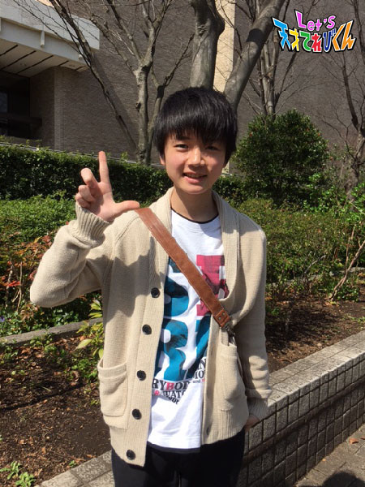
と、いうわけで新年度 初のLet’s！！
投稿者:瀧澤翼 | 投稿時間:18時45分 | カテゴリ：てれび戦士 | 固定リンク
私の得意ワザ！［辻晴仁］
はじめまして！
新てれび戦士になった、４年生の辻※ 晴仁（ つじ はると ）です。 ※一点しんにょう
これからよろしくおねがいします (^^♪
てれび戦士に選ばれたとき、信じられなくて、とてもびっくりしました。
しばらくの間ずっと、本当なのかなあ～本当なのかなあ～と思っていたけど、
大野課長の指令で徳島に行くことになって、
やっと実感がわきました。
徳島ではいろいろなミッションをしたけれど、
いちばん印象にのこったのは、カメ洗いです。
カメのこうらは洗えば洗うほどツルツルになっていくので、
とてもきもちがよかったです。
ぼくはいきものが大好きで、かめはチョ～～かわいかったので、
すっごく楽しかったです o(≧▽≦)o
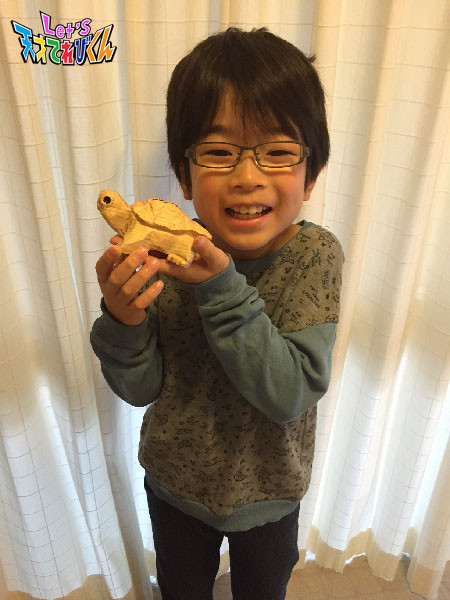
さて、テーマにうつりたいと思います。
今回のテーマは、「 私の得意ワザ！ 」です☆
ぼくの得意ワザは、
口で、「 カーン！！ 」と、
めちゃめちゃ大きな音を鳴らすことです。
やり方は、まず舌の先を上アゴにつけて、少し吸って、
真ん中まで持ってきて、勢いよくはなすと、音が鳴ります。
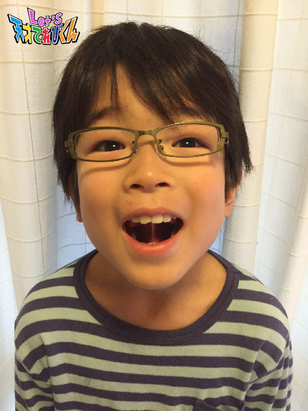
学校の友だちとかが、「 教えて！ 」と言うけど、
教えても、できる人はあんまりいないです。
けど、大きな音が鳴ると、とっても気持ちがいいので、
ぜひ挑戦してみてください *(^o^)/*
投稿者:辻晴仁 | 投稿時間:18時45分 | カテゴリ：てれび戦士 | 固定リンク
私の得意ワザ！［桐畑カレン］
こんにちは。
カレンです (*^^*)
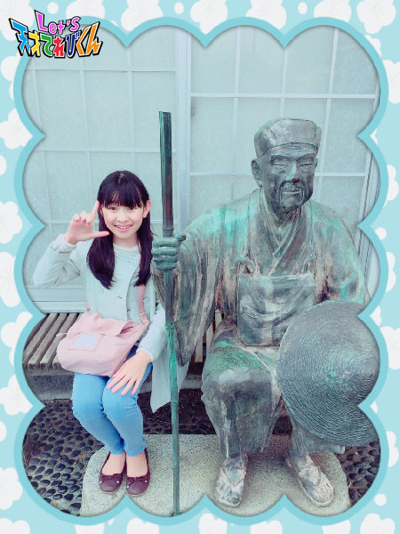
松尾芭蕉さんの像と一緒に写真をとりました。
そして私も一句・・・
４月から
しっかりしよう
がんばるよ
～カレン４月からの目標の俳句～
今回のお題は「 私の得意ワザ！ 」ですね。
それでは、いってみましょうー！
☆ 性格編 ☆
気持ちのきりかえが早い！
すっきり忘れて次にいきます。
忘れすぎてだめなところもあるけど、
すぐ立ち直れる自分のこういうところは好きです (*^-^*)
☆ 体力編 ☆
回転に強い！
くるくる回るものが大好きです。
絶叫マシーンはもっと回れ～って思っちゃうし、
コーヒーカップは全力でハンドルを回します。
スピードある回転が大好き。
メリーゴーランドでゆっくりくーるくーる回るのも好きです。
あ、あと、本気出すと、階段をおりるのがめちゃめちゃ速いです！
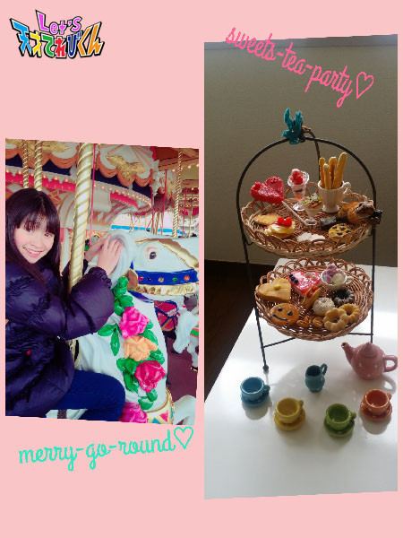
☆ 趣味編 ☆
スイーツ作り（ 粘土で作ったものです ）！
不器用そうにみられるけど、
意外と細かい作業も好きなんですよ (^w^)
おいしそうにできたらうれしい♪
☆ 自分でも気付かなかったよ編 ☆
学校の道徳の時間に、
「 この人は誰でしょう？ 」ゲームをしました。
そのときに、
【 人との関係を築くことが上手で、いろいろな人と楽しく過ごせる人 】
と、紹介してもらったんです。
とってもうれしかったです (*^▽^*)
以上、こんな感じの私ですが・・・
これからもよろしくお願いします (〃^ー^〃)
投稿者:桐畑カレン | 投稿時間:18時45分 | カテゴリ：てれび戦士 | 固定リンク
私の得意ワザ！［胡内奏芽］
みなさんこんにちは！
そして、はじめまして！！
胡内奏芽（ こうちかなめ ）です。
４月からてれび戦士の仲間になりました。
はじめてのブログでドキドキしてますが、よろしくお願いします。
今回のテーマは「 私の得意ワザ！ 」
ボクの持技は工作！！
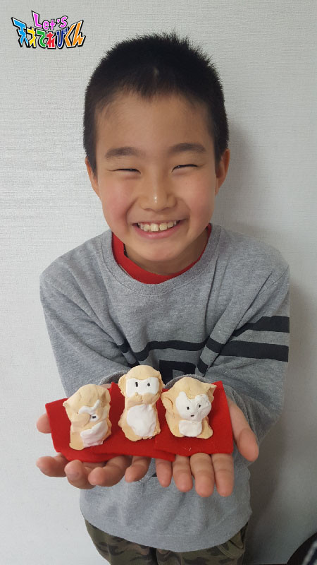
見ざる言わざる聞かざる。
今年はさる年なので、１月に紙ねんどで作りました。
家の玄関にかざっています。
そして、コレもお気に入りです。
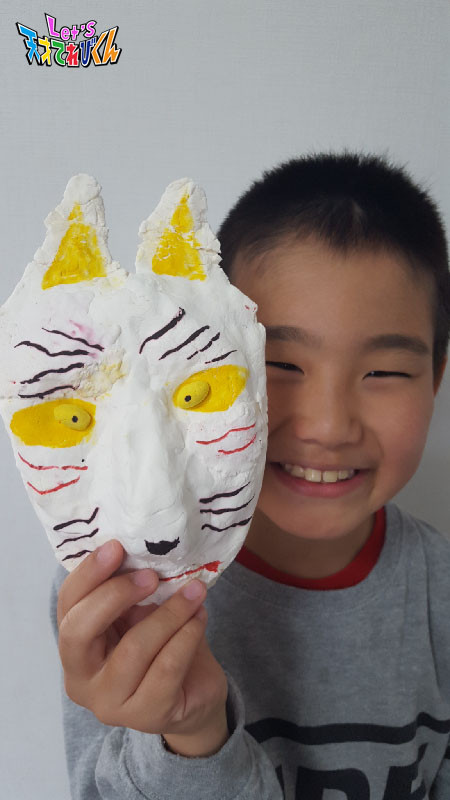
キツネのお面！！
キツネの線がむずかしかったです。
こんなボクですが、よろしくお願いします。
投稿者:胡内奏芽 | 投稿時間:18時54分 | カテゴリ：てれび戦士 | 固定リンク
私の得意ワザ！［小澤竜心］
こんにちは！小澤竜心です。
ぼくは、小学６年生になりました。
『ぼくの得意ワザ！』は、
【 スポーツや、身体を動かすこと！ 】です。
☆ 少林寺拳法 ☆
去年は全国大会に出場したり、
黒帯もいただくことができました。
これからは、後輩に技を教えることも、
がんばっていきたいです！
☆ ダンス ☆
ジャズダンスとタップダンスを習っています。
バランス感覚やリズム感を学べるので、
とってもおもしろいです。
今年は発表会があるので、楽しみだな～♪
☆ 殺陣（ たて ）と剣術 ☆
迫力のある立回りを目指して、修行中です。
しっかり技を身につけて、
得意ワザ！と言えるように、がんばります！！
これからも稽古（ けいこ ）で、強い身体と心を作って、
いつか、いろんな日本の良さを伝えられる人になりたいです。
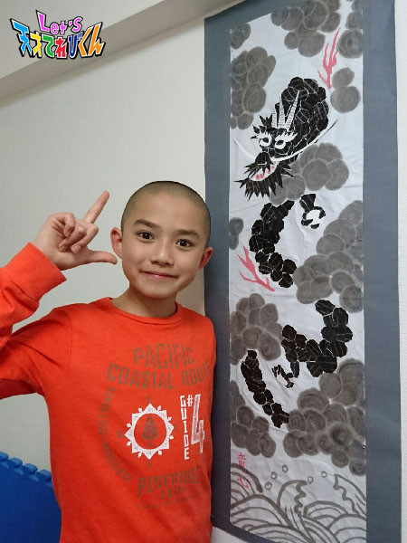
それから、
【 絵を描いたり、工作をすること！ 】も得意です。
去年の夏休みの自由研究は、
墨（ すみ ）と貼り絵で『 のぼり竜 』を作りました。
今年もすごい作品を考えて、形にしたいです♪
てれび戦士としても初心を忘れず、
みんなと協力して、がんばります o(^-^o) (o^-^)o
投稿者:小澤竜心 | 投稿時間:18時45分 | カテゴリ：てれび戦士 | 固定リンク
私の得意ワザ！［黒川桃花］
はじめまして。
新しくてれび戦士になりました、黒川桃花です。
「 私の得意ワザ！ 」ですが、
私は、得意というか大好きなのが「 歌 」です。
通学途中や電車の中でも、気付くと歌っています (^_^;)
周りの人に、変な子だなあというような目で見られてしまって
少し恥ずかしいですが、、、
今はミュージカルの曲が好きで歌っていますが、
これからは色んなジャンルの歌にも挑戦したいと思っています。
演歌とか♪
あと私が得意なことは、「 大声 」を出すことです。
うるさーい！って怒られるのですが、
「 得意ワザ 」だと思ってます！
どうしてこんなに声が大きいのか気になったので考えてみたら、
赤ちゃんの頃、私はとーってもよく泣いてたそうで、
あおむけになりながら大きな声で泣いていたら、
自然と腹式呼吸になっていて、
大きな声をだせるようになったのではないかなと思います。
あくまで想像ですけどね。 (^_-)
これからてれび戦士として、
明るく元気にがんばっていきたいと思います！
投稿者:黒川桃花 | 投稿時間:18時45分 | カテゴリ：てれび戦士 | 固定リンク
私の得意ワザ！［原田明莉］
☆ Hello ☆
あかりです！
2016年度に入りましたね！
これからもよろしくお願いします！
新しい年がはじまりましたねーー！！
出会いと別れの時期ですね・・・。
寂しいことも、もちろんたくさんだけど
楽しみなこともたくさんです！！
ではでは
本題に入りたいと思います！
今回のテーマは
「 私の得意ワザ！ 」
です！
もちろん
・・・
・・・
・・・
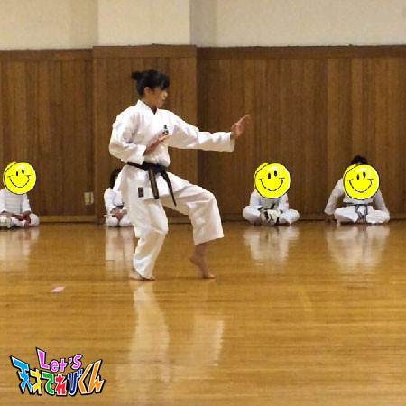
空手です笑笑
これは知ってる方も多いと思うので
短所や長所！
好きなものなど
自分の自己紹介をしたいと思います！
まず改めまして
中学１年生になりました12歳の原田明莉です！
まずは好きなもの！
色はオレンジや黄色の明るい系の色が好きです！
食べものはオクラとフルーツが好きです！
最後にどちゃもんは、こまちまちこやてげてげのような
ギャップの強いどちゃもんが好きです！
あと！
嫌いなこともあります！
ヒマがある日がいやです！
趣味は食べることと外で遊ぶこと、
いろいろな家を見ることです！
特技はもちろん空手！
空手以外に水泳がまぁまぁ得意です！
そして最後に私の長所と短所です！
長所は誰とでも仲良くできるとこと、明るいとこと
１つのことに集中できるということです！
短所は団体行動が苦手なのと
しゃべるのは好きだけど、
「 なにしゃべってんのかよくわかんない 」
ってよく言われます （笑）
日本語をうまく使えないとこも短所です！
あとおっさんくさいとこです・・・
私の自己紹介！こんな感じです！
いろいろと知ってくれていたこともあったと思うし
逆に前と変わったこともあったかもしれないです！
今の原田はこんな感じです！
私も全力でがんばるので
これからも応援よろしくお願いします！
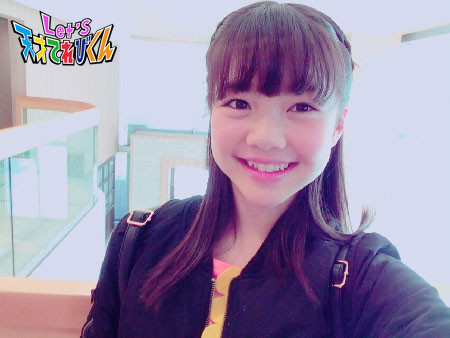
投稿者:原田明莉 | 投稿時間:18時45分 | カテゴリ：てれび戦士 | 固定リンク
私の得意ワザ！［久保みのり］
みなさん。はじめまして(^O^)／
４月から新てれび戦士になった久保みのりです。
９月生まれ「 みのりの秋 」の みのりんです ^ ^
とんがり３人組からどちゃもんを守るためがんばるぞ！！
応えんしてください ^o^
*.｡.:*・ﾟ *.｡.:*・ﾟ *.｡.:*・ﾟ *.｡.:*・ﾟ
私はフルーツが大好きなんだけど、
そのなかでもいちごが大大大すきなの。
春休みに家族でいちごがりに行ってきたよ！！
すっごく大きくてあ まーいいちごがたっくさん。
おなかがふくれあがるくらい食べちゃった笑
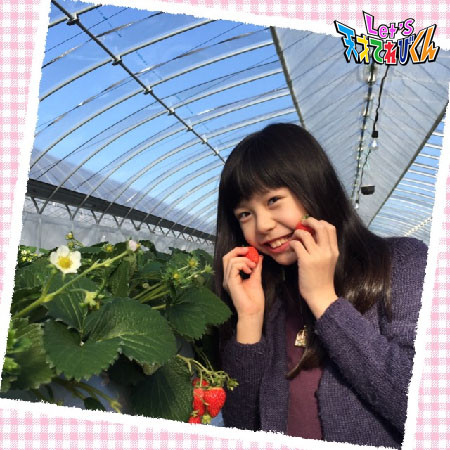
*.｡.:*・ﾟ *.｡.:*・ﾟ *.｡.:*・ﾟ *.｡.:*・ﾟ
ではでは。今回のテーマ「 私の得意ワザ！ 」
それは・・・
どんなときでも、きんちょうしないこと！！
ドキドキよりワクワクの方が大きいからかな ^ ^
みなさんはどうですか～？
春は新しいことがたくさんでなんだかワクワクするなぁ。
新しい先生に新しいお友だち、新しい教科書。
４月はワクワクのスタートです ^o^
なんでも自信をもってできるように、一生けんめいがんばります！
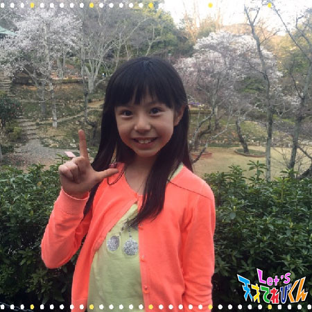
投稿者:久保みのり | 投稿時間:18時45分 | カテゴリ：てれび戦士 | 固定リンク
私の得意ワザ！［林武尊］
こんにちは、林武尊です！！
この前、無事小学校を卒業しました！
泣かなかったけど、
他の学校に行く友だちもたくさんいて、悲しかったです …>_<…
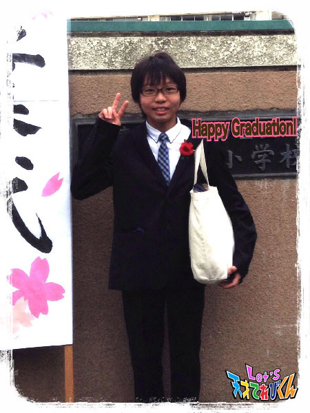
それでは本題へ
今回は自分の得意ワザです！
けん玉はまだ練習中なので、今回は他のものを紹介します！
僕はバスケットボールが得意です。
その中でも、僕はスリーポイントシュートが得意ワザです！
学校の教科では理科！
中でも実験が大好きです。
海の深いところと真空状態で物はどんなふうに変わるのかとか、
液体窒素（ ちっそ ）を使った実験をやってみたいと思っています。
あとは、はじめてあった人でも、すぐ仲良くなれることかな？
あまり、人見知りをしません。
他にもボイスパーカッションが得意！
よく動画を見て自分で勉強しています (^O^)／
みなさんは、どんな得意ワザがありますか？
投稿者:林武尊 | 投稿時間:18時54分 | カテゴリ：てれび戦士 | 固定リンク
私の得意ワザ！［柿澤仁誠］
こんにちは。
ぼくは、新てれび戦士の柿澤仁誠です。
ブログを書くのは生まれてはじめてなので不安だけど、
みんなに楽しんでもらいたいので、がんばって書きます。
今回のテーマは、「 私の得意ワザ！ 」
ぼくの得意ワザは空手です！！
でも、じつはどうどうと言えるほどのレベルではないです。
なのでもっとこれからも練習をがんばろうと思います。
あともう１つ、得意ワザにしたいと思っているものがあります。
それは、けん玉です！
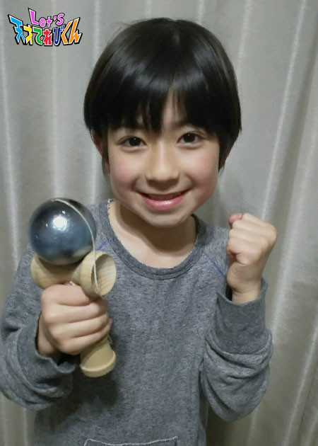
クリスマスにけん玉をもらったときから
大好きになりました！
せいこうするとすごくうれしいからです！！
コレがぼくの、けん玉です！
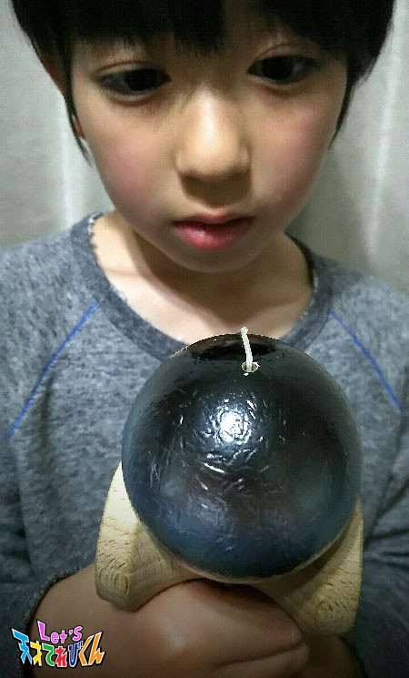
すごくボコボコになってしまいましたが、
大事にしています。
ぼくも林たける君みたいに、
“ とくぎはけん玉！ ”と言えるぐらいがんばりたいです！！
↑ 実はこの前、林たける君にむずかしいワザを教えてもらいました！
今はそのワザをとっくんしています (^o^)
投稿者:柿澤仁誠 | 投稿時間:18時45分 | カテゴリ：てれび戦士 | 固定リンク
私の得意ワザ！［飯島緋梨］
こんにちは (^-^)
飯島緋梨です。
前回も言ったとおり花粉・・・
まだまだ続きますね。
つらい・・・つらすぎる。
ヘックション！ (T ^ T)
花粉症の方たち！
ともにがんばりましょう！！
そうそう、
この前！卒業式があったのです
とうとう緋梨も小学校を卒業！
あっと言う間の６年間でした (^^)
学校のみんなで放課後遊んだことや修学旅行に行ったこと
モチロン、Let'sのみんなと過ごしたことは
ぜんぶ宝物です *\(^o^)/*
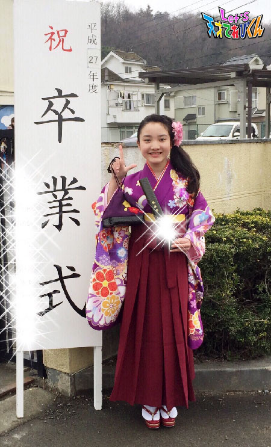
さてさて、
今回のお題は・・・｢ 私の得意ワザ！ ｣
まず１つ、私の得意ワザといえば
【 モノマネ 】です！
ものまねをしてみんなが笑ってくれるとうれしいし、
自分も楽しいからです！
モノマネ番組を見たり仕草をまねしたり
みんなの前で試したりして研究中です
最近、大好きなものまね芸人さんがいます！
その人は、横澤夏子さんです♪
特に、音楽の先生のモノマネがあって
その先生の行動とか仕草とか話すこととか！
すっごくそっくりで、
いつも音楽の先生に会うと、横澤夏子さんが頭の中に出てきて
歌ってる最中も横澤夏子さんのモノマネを思い出して
笑ってしまいます （笑）
なので緋梨も横澤夏子さんのように
“ 思い出し笑い ”をさせられるような
あるあるモノマネのワザをみがきたいです！
もう１つの得意ワザ？は
【 変顔 】です （笑）
写真を撮るときに変顔をすると
写真を振り返って見たときに
思い出が特によみがえってきます！
だけど最近は変顔の写真ばかりで
アルバムが変顔だらけです （笑）
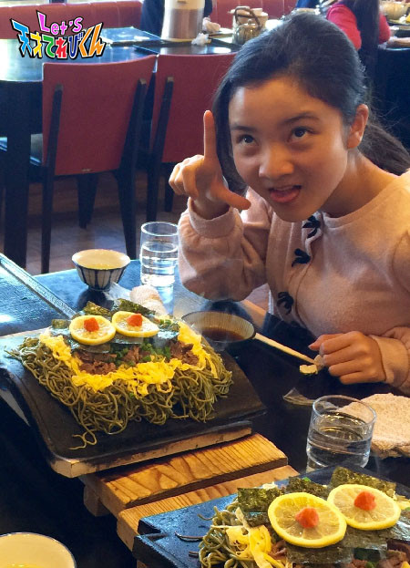
みなさんの得意ワザは何ですか？
Let's 得意ワザ！！
投稿者:飯島緋梨 | 投稿時間:18時45分 | カテゴリ：てれび戦士 | 固定リンク
私の得意ワザ！［稲垣芽生］
はじめまして！
新メンバーの、いながきめいです。
てれび戦士の中では「 めいぼー 」って呼ばれてるから
「 めいぼう 」って呼んでね♪
「 めいぼう 」「 めいぼー 」どちらでもうれしいです☆
小学４年生で、３月19日に９才になりました！
おたん生日会とっても楽しかったです♪
私は『 不思議の国のアリス 』の大ファンで
アリスに会えたらいいな～といつも思ってます♪
好きな食べものは、からあげです。
嫌いな食べものは、もしゃもしゃするのが苦手でレバーです。
てれび戦士の中ではいちばん背が小さいですが
なんでもおいしくたくさん食べます。
今回のテーマは「 私の得意ワザ！ 」
得意ワザは、鉄ぼうで
いちばん得意なワザはプロペラというワザです。
鉄棒を足にはさんでそのままグルンと回れたら成功です。
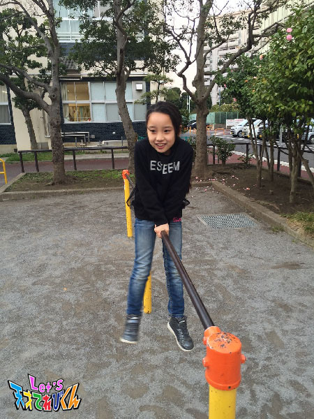
いきます！せーの
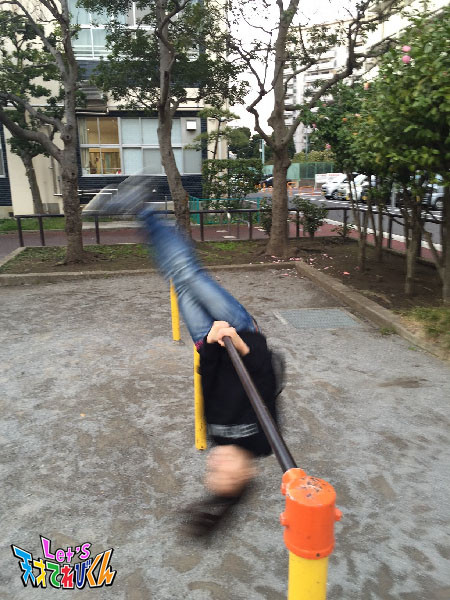
おっ！
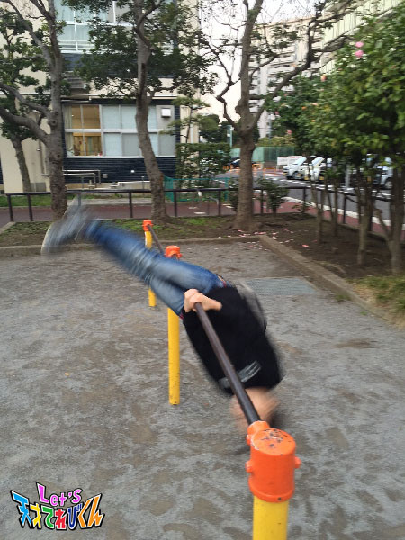
おっ！おっ！
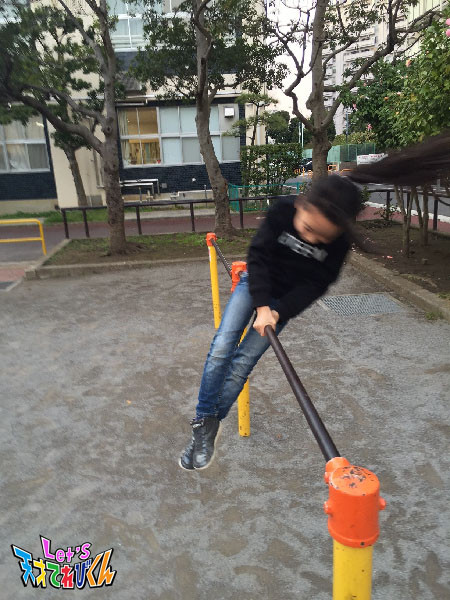
おぉ～すごい！できた！
学校で、鉄ぼう名人って呼ばれてますが
昔は鉄ぼうが苦手だったので
私が鉄ぼう名人って呼ばれるなんてビックリです。
毎日練習してできるようになりました！
これからいっしょに異次元獣をやっつけましょう！
応援よろしくお願いします☆
投稿者:稲垣芽生 | 投稿時間:18時45分 | カテゴリ：てれび戦士 | 固定リンク
ページの一番上へ▲